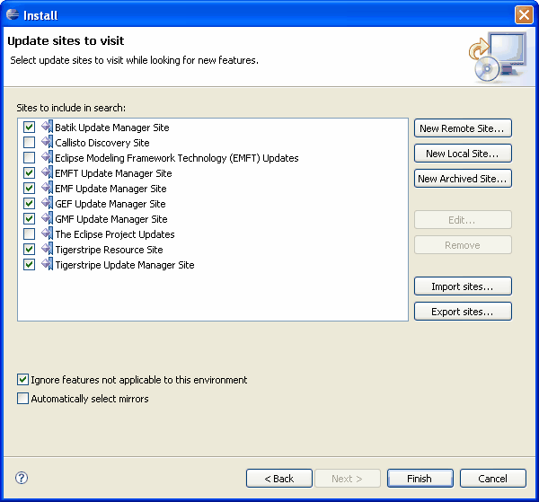

© copyright 2005, 2006, 2007 Cisco Systems, Inc. - All rights reserved
The first option to install Tigerstripe Workbench, is to use the Tigerstripe Update Manager Site. Although this process is longer than downloading a pre-bundled version, it automatically sets up Eclipse so that it will be able to periodically check for updates and notify you when they are available.
Eclipse uses a convenient update mechanism, allowing you to install plug-ins in an Eclipse installation and keep them updated automatically. This mechanism relies on pointing Eclipse to the right update sites. Out of the box, Eclipse only comes with two Update Manager sites pre-configured. You will need to add a few more for Tigerstripe Workbench. You need to configure the following Update Manager sites to satisfy all dependencies:
- Tigerstripe Update Manager Site
- EMF Update Manager Site
- EMFT Update Manager Site
- GEF Update Manager Site
- GMF Update Manager Site
- Batik Update Manager Site
- UML2 Update Manager Site
You don't have to set up the Update Manager sites manually, the Tigerstripe Workbench installation process provides a file that you can import into your Eclipse instance. Complete the following steps to configure the Update Manager sites.
To Configure the Update Manager Sites:
- Select Help, point to Software Updates, and click Find and Install from your Eclipse Workbench. This opens the Update Manager page.
- Select Search for new features to install. A list of Update Manager sites configured in your Eclipse install appear.
You can manually setup each site, however you can import a configuration list from Tigerstripe using the Import Sites button. Complete the following procedure to import a configuration list.
To Import a Configuration List:
- Click on the following link to download the list.
- Save the file to your computer.
- Click the Import Sites button in the Install dialog box to import the configuration list. The Update Manager Sites should be configured, as shown in the following figure.

- Click Finish to allow Eclipse to visit the selected Update Manager Sites. Eclipse will look for new features to install.
Note: During this process, Eclipse will present you with possible mirror sites. These sites are very popular, so you are advised to select various mirror sites to decrease your download time.
- Once all sites have been visited, you will be presented with a list of all features available for download.
Beware! These features may have cross-dependencies, so it is safer to let Eclipse resolve them for you.
Selecting features to download
Completing Installation

© copyright 2005, 2006, 2007 Cisco Systems, Inc. - All rights reserved